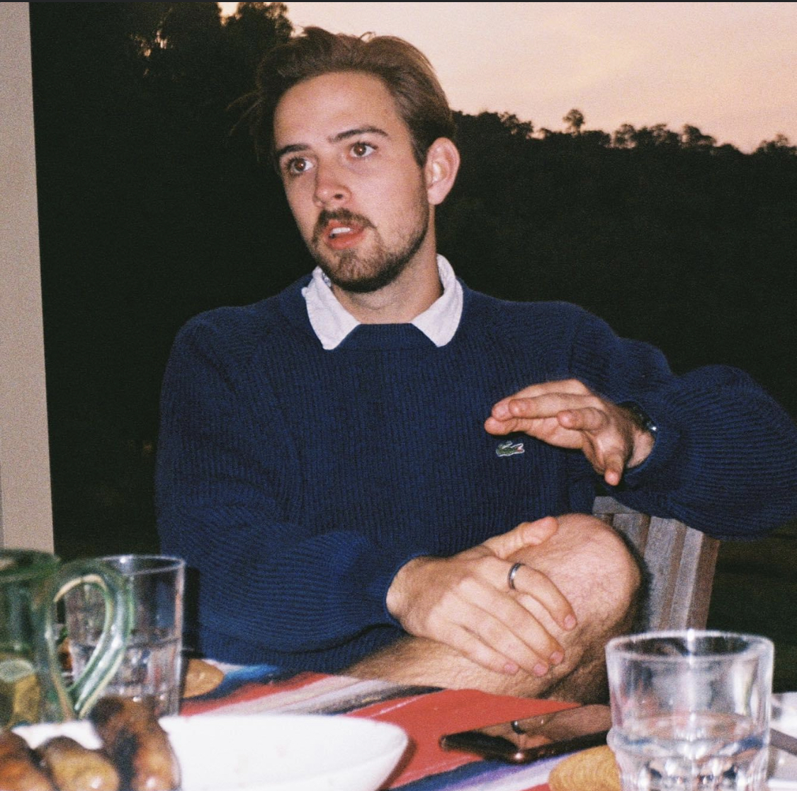

About Me
Personal Information
Student Number:S3657718
Email address: s3657718@student.rmit.edu.au
Basic Information: My name is Nicholas Dugan I am 23 years old and currently living in Fitzroy in an apartment with 2 other students. In my work life I work part time as a manager in an engineering firm and run a small start-up in my evenings. Something interesting that I am doing is building a small 1850s designed whaling boat in my parent’s backyard with a plan to sail the east coast once its completed.
Interest in IT
IT has always been a big part of my life, when I was young my dad and I built a computer together which introduced me into the complex understanding of computers as well as understanding the basics of programming. While my skills definitely do leave much to be desired, I now am fortunate enough to run my own business in the ski and snowboard industry which is an area of passion of mine. The backbone of this business is our website and the capabilities that it brings to our customers therefore it has been imperative for me to learn as much as I can about IT and its connections with the business world so while I am not the most capable when it comes to IT, it is something that I involve myself more with every single day.
Ideal Job
As can be seen in my profile below I consider myself a people person with an interest in meeting people and building new relationships. If I had to find a dream job in tech, combining this skill with a desire to be on the forefront of technology would be something that interests me. Therefore, a dream role would be either a project manager or as a business analysist that gets to work with the client to help improve their processes this would make use of my degree in logistics and supply chain management. Obviously, I would need to increase my skills and understanding of IT however this would allow me to access my skills that I already have or are currently growing and hence would fit well with my capabilities.
https://www.seek.com.au/job/51737787?type=standout#searchRequestToken=336e0afd-e231-451d-b62b-c40c3122f1bc
Dream JobRole: Senior IT Business Analyst
Wage: $130,000
Experience Requirement: 3 years technical experience
Skills to improve: Increased firsthand IT experience, increased business analysis and review experience, increased corporate experience, IT qualifications.
Personal Profile
The first personality analysis was the Myers-Briggs profile this developed in the early 20th century breaks an individual down into one of 16 different personality types, these break down how we see the world and how we interact with those in it. My personality type is the Campaigner which is a free spirit personality that “are less interested in the sheer excitement and pleasure of the moment than they are in enjoying the social and emotional connections they make with others. Charming, independent, energetic and compassionate, the 7% of the population that they comprise can certainly be felt in any crowd.” This personality type is predominately a curious and an enthusiastic personality that enjoys contact with people however can become hindered by an inability to remain focused as well as poor practical skills.
Whereas the Myers-Briggs is to see your overall personality and behaviour traits the learning style test analyses how you best learn though either visual, auditory or tactile means. In my specific case I am both a visual learner at 40% and an auditory learner at 35% with tactile learning making up for 25%. This means I learn best from seeing something done or having it explained to me rather than having to read about it myself furthermore this can mean I am good at visualisation and explaining information to other people however I can be distracted by the outside world.
The third and final analysis is the Big Five Personality Test. This provides similar information to that of the Myers-Briggs personality test however rather than categorising you as one particular personality type this breaks your personality down into 5 key groups which are extroversion, emotional stability, agreeableness, conscientiousness and intellect/imagination. In my case I scored highly on extroversion with 86th score percentile, emotional stability in the 78th and intellect/imagination on 52nd. Where I performed less on is agreeableness and conscientiousness where agreeableness wasn’t that low of a raw score however this lowered with score percentile. What this all means is that I tend to be outgoing and social with a good control over my emotions resulting in less mood swings and outbursts and tend to be more open to new experiences and trying things in unconventional ways. My negative sides are that I tend to be more critical and impulsive or disorganised which can negatively impact my work.